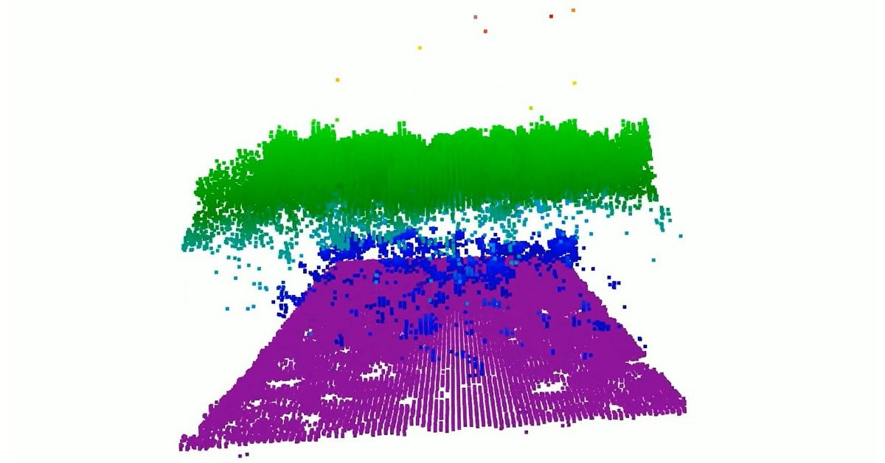
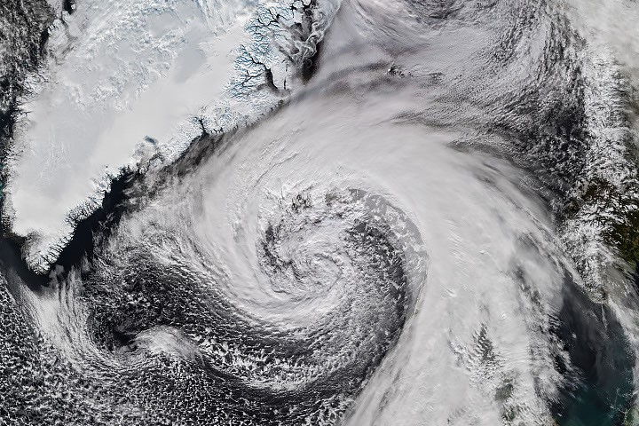

01
NASA realizará sobrevôo da NCAA e envolverá fãs na Universidade do Alabama
Como parte do Inspiration Tour da agência, a NASA realizará um sobrevoo no jogo de futebol americano da Universidade do Alabama x Texas A&M em Tuscaloosa, Alabama, em
 BBC USCidadão americano Stephen Hubbard libertado pela Rússia enquanto enviado de Trump se encontra com Putin
BBC USCidadão americano Stephen Hubbard libertado pela Rússia enquanto enviado de Trump se encontra com Putin BBC AfricaNigeria confirms Ebola case linked to East Africa
BBC AfricaNigeria confirms Ebola case linked to East Africa BBC WorldRússia diz estar pronta para retomar conversações com Ucrânia e EUA para acabar com a guerra
BBC WorldRússia diz estar pronta para retomar conversações com Ucrânia e EUA para acabar com a guerra BBC AsiaBillionaire Mukesh Ambani's Jio launches India's biggest share sale
BBC AsiaBillionaire Mukesh Ambani's Jio launches India's biggest share sale BBC Middle EastHouthi missile strike on Yemen camp kills 73 security recruits, local authorities say
BBC Middle EastHouthi missile strike on Yemen camp kills 73 security recruits, local authorities say NASA Breaking NewsCiência na Estação Espacial com a astronauta da NASA Jessica Watkins
NASA Breaking NewsCiência na Estação Espacial com a astronauta da NASA Jessica Watkins BBC World'Ilha do Lixo' ou marco de DC? Como um campo de golfe colocou Trump em uma complicada disputa legal
BBC World'Ilha do Lixo' ou marco de DC? Como um campo de golfe colocou Trump em uma complicada disputa legal BBC AfricaO Ébola está sob controlo no Quénia depois de nove casos confirmados?
BBC AfricaO Ébola está sob controlo no Quénia depois de nove casos confirmados? BBC News BrasilAnálise: quem está por trás dos protestos violentos na França e quem pode se beneficiar deles?
BBC News BrasilAnálise: quem está por trás dos protestos violentos na França e quem pode se beneficiar deles? BBC WorldDeputado australiano perde ambas as pernas após suposto ataque de carro, diz marido
BBC WorldDeputado australiano perde ambas as pernas após suposto ataque de carro, diz marido BBC WorldQueima de Bornéu: a vida na linha de frente da névoa tóxica do Sudeste Asiático
BBC WorldQueima de Bornéu: a vida na linha de frente da névoa tóxica do Sudeste Asiático
NASA Breaking NewsO instrumento CASALS da NASA preenche lacunas em mapas 3D da superfície da Terra BBC WorldMigrantes haitianos mudaram esta cidade dos EUA – a campanha de deportação de Trump está remodelando-a novamente
BBC WorldMigrantes haitianos mudaram esta cidade dos EUA – a campanha de deportação de Trump está remodelando-a novamente BBC AfricaDrones do exército sudanês atingiram pessoas em luto e mercado de combustível, matando mais de 300 pessoas, dizem fontes
BBC AfricaDrones do exército sudanês atingiram pessoas em luto e mercado de combustível, matando mais de 300 pessoas, dizem fontes BBC EuropeZelensky diz que compartilhamento de inteligência ‘funciona agora’ como enviado dos EUA para se encontrar com Putin na Rússia
BBC EuropeZelensky diz que compartilhamento de inteligência ‘funciona agora’ como enviado dos EUA para se encontrar com Putin na Rússia BBC WorldBBC dentro do tribunal australiano enquanto homem acusado de atacar MP permanece em silêncio na primeira audiência
BBC WorldBBC dentro do tribunal australiano enquanto homem acusado de atacar MP permanece em silêncio na primeira audiência BBC WorldA Coreia do Norte publica fotos de Kim Jong Un – por que os rumores sobre sua morte continuam voltando?
BBC WorldA Coreia do Norte publica fotos de Kim Jong Un – por que os rumores sobre sua morte continuam voltando? BBC ScienceAstronaut surprise video leaves pupils starstruck
BBC ScienceAstronaut surprise video leaves pupils starstruck BBC USO que sabemos até agora sobre o fogo mortal na base militar canadense
BBC USO que sabemos até agora sobre o fogo mortal na base militar canadense BBC AfricaSwimmer, 65, killed in shark attack off South Africa's east coast
BBC AfricaSwimmer, 65, killed in shark attack off South Africa's east coast BBC WorldKatya Adler: A França está dividida sobre quem culpar pelos tumultos e o que aprender com eles
BBC WorldKatya Adler: A França está dividida sobre quem culpar pelos tumultos e o que aprender com eles BBC Middle EastReino Unido enviará jatos para defender a Arábia Saudita dos ataques Houthi
BBC Middle EastReino Unido enviará jatos para defender a Arábia Saudita dos ataques Houthi BBC WorldElon Musk confirma que está considerando fundir Tesla e SpaceX
BBC WorldElon Musk confirma que está considerando fundir Tesla e SpaceX BBC AsiaDonald Trump está pronto para fazer negócios com Mianmar?
BBC AsiaDonald Trump está pronto para fazer negócios com Mianmar? BBC AfricaFilhos do líder do culto no Quênia ainda passam fome semanas antes do julgamento, diz filho
BBC AfricaFilhos do líder do culto no Quênia ainda passam fome semanas antes do julgamento, diz filho BBC EuropeMeu filho desapareceu da face da terra lutando pela Rússia
BBC EuropeMeu filho desapareceu da face da terra lutando pela Rússia BBC Middle EastIsrael's far right find fertile ground among first-time voters
BBC Middle EastIsrael's far right find fertile ground among first-time voters BBC WorldPor que Elon Musk está planejando uma megafusão entre SpaceX e Tesla?
BBC WorldPor que Elon Musk está planejando uma megafusão entre SpaceX e Tesla? BBC WorldA decisão decisiva de Alberta de permanecer no Canadá dá apoio a Carney para enfrentar Trump
BBC WorldA decisão decisiva de Alberta de permanecer no Canadá dá apoio a Carney para enfrentar Trump BBC AfricaMoradores alertados para não beber água da torneira depois que centenas de pessoas adoeceram perto da capital da África do Sul
BBC AfricaMoradores alertados para não beber água da torneira depois que centenas de pessoas adoeceram perto da capital da África do SulComo parte do Inspiration Tour da agência, a NASA realizará um sobrevoo no jogo de futebol americano da Universidade do Alabama x Texas A&M em Tuscaloosa, Alabama, em
O ex-professor de 74 anos, que foi capturado, foi libertado sem necessidade de qualquer “troca”, diz Trump.
A paciente, que fontes disseram à BBC não é nigeriana, está isolada e num hospital de Abuja.
O anúncio ocorreu depois que o presidente russo, Vladimir Putin, se encontrou com o enviado especial do presidente dos EUA, Donald Trump, Steve Witkoff, em São Petersburgo.
O El Niño pode ter intensidade sem precedentes e ultrapassar os padrões observados nas últimas quatro décadas, afirmou nesta quarta-feira (21) a diretora da agência meteorológica das Nações Unidas. O El Niño deve levar uma onda de calor para algumas regiões e abalar os padrões de chuva, provocando seca severa, enquanto em outras regiões ele pode causar inundações, disse Celeste Saulo, secretária-geral da Organização Meteorológica Mundial. Relatório Notícias relacionadas: Agência da ONU diz que El Niño deve se intensificar e ir até fevereiro. Painel indica que El Niño pode ser um dos mais intensos desde 1950. O aquecimento global deve ser mais
O segundo mega IPO da Índia em um mês ocorre apesar dos mercados acionários fracos e tem como objetivo levantar US$ 3,2 bilhões.

Chegada da montadora à Bahia é simbólica dentro do contexto de ascensão da China ao posto de líder do mercado de veículos elétricos — e de aproximação econômica e cultural do país asiático com o Brasil. Reportagem da BBC News Brasil viajou a Camaçari para contar essa história global a partir das lentes locais.
Três mísseis atingiram na segunda-feira um campo na província de Shabwa, controlada pelo governo, que estava sendo usado como centro de treinamento, disse o exército do Iêmen.

Brian Stack estava atravessando uma rua em Dublin em 1983 quando foi baleado na nuca e morreu 18 meses depois.
A astronauta da NASA e engenheira de vôo da Expedição 75, Jessica Watkins, trabalha dentro da caixa de luvas de ciências biológicas do módulo de laboratório Kibo em 9 de outubro de 2026, com segurança
Trump disse que tem planos de transformar um campo de golfe público de 106 anos em Washington DC em um campo de golfe com capacidade para torneios para profissionais, mas os golfistas locais não estão satisfeitos.
Os EUA aconselharam os seus cidadãos a reconsiderarem viajar para o Quénia, mas o governo tenta tranquilizar as pessoas.
País está dividido sobre o que levou a alguns dos piores distúrbios vistos em cidades francesas na história moderna; mas quem ganha com o caos no país?
Seu suposto agressor, Brendan Nugent, de 43 anos, enfrenta diversas acusações e compareceu ao tribunal pela primeira vez na quarta-feira.
Um “Super El Niño” alimentou incêndios que duraram meses na Indonésia, deixando centenas de milhares de pessoas doentes.

Foi apresentada uma proposta de 3,6 mil milhões de libras para impedir a descarga de esgotos em Windermere, o maior lago de Inglaterra.
A partir da órbita, os actuais instrumentos laser baseados no espaço medem as florestas e o terreno da Terra, uma linha estreita de cada vez. Entre essas linhas existem enormes lacunas que
O presidente colocou Springfield, Ohio, sob os holofotes com uma falsa alegação de que comia animais de estimação – anos depois, a cidade continua no centro do debate sobre imigração.
Um caminhão que transportava pessoas para um funeral e um mercado que supostamente fornecia combustível para a RSF foram os alvos.
Steve Witkoff desembarcou em São Petersburgo para discutir propostas para acabar com o conflito de anos da Rússia com a Ucrânia.
Katy Watson, da BBC, descreve o que aconteceu em Wangaratta quando Brendan Nugent, de 43 anos, compareceu ao tribunal por causa do suposto ataque de Helen Haines.
A mídia estatal norte-coreana publicou fotos do ditador com sua filha depois que o boato infundado se espalhou.

Ben Chu, da BBC Verify, explica por que os preços da energia são tão altos e o que Jackdaw pode significar para suas contas.
A surpresa veio depois que o pai de um professor conheceu Peake enquanto trabalhava em um navio de cruzeiro.
Foi confirmado que pelo menos quatro pessoas morreram depois que um grande incêndio atingiu a base.
Janine Lochrenberg, 65 anos, estava nadando diariamente pela manhã com seu clube quando foi atacada, disse sua família à BBC.
Em França e noutros países, há um desacordo generalizado sobre o que levou a alguns dos piores distúrbios vistos nas cidades francesas na história moderna.
O Reino Unido anuncia que fornecerá apoio militar defensivo adicional à Arábia Saudita à medida que os ataques Houthi aumentam na região.

As vulnerabilidades do PHP, uma linguagem de programação amplamente utilizada na Internet, foram descritas como as mais significativas já encontradas pela IA.
Musk diz que comitês especiais dentro de ambas as empresas foram formados para analisar uma possível megafusão.
Há sinais de que os Estados Unidos estão a mudar a sua política em relação a Mianmar, anteriormente um pária global.
Dan Mackenzie inicialmente defendeu seu pai, mas agora diz que sentiu que deveria denunciar sua própria avó.
A família de Nathan Stobbart afirma que ele enfrentaria a deportação da Rússia se não se alistasse no exército do país.
Mais de meio milhão de jovens votarão em Israel na próxima semana – e poderão fazer toda a diferença.

As máquinas de autoatendimento do metrô de São Paulo já estão aceitando o Pix como forma de pagamento. A nova modalidade de pagamento passou a ser aceita nesta terça-feira (20), inicialmente, apenas para a Linha 1-Azul. A funcionalidade será ampliada para usuários de outras linhas nos próximos dias, o que exige que os equipamentos sejam reprogramados. Segundo a prefeitura, o calendário de implementação do sistema nas máquinas do Metrô ocorrerá da seguinte forma: Linha 2-Verde, 23 a 26 de outubro; Linha 3-Vermelha, 27 e 28 de outubro; Linha 15-Prata, 29 e 30 de outubro. Trens No sistema ferroviário, o recurso já está presente em todas as linha
Musk diz que há “muito a ganhar” com a combinação das empresas no que seria a maior fusão da história.
A votação esmagadora de Alberta para permanecer no Canadá dá a Mark Carney capital político para se concentrar na reconstrução da economia do país, escreve Lyse Doucet da BBC.
Mais de 400 pessoas, a maioria crianças, adoecem depois de beberem água contaminada, a leste de Pretória.

As tensões políticas e sociais estão em alta temperatura na França após protestos que tiveram casos de vandalismo e saques.

Se o céu limpo permitir, os observadores do céu poderão detectar de 10 a 20 meteoros por hora durante o pico da chuva esta semana.
APOD Science APOD APOD: 2026 21 de outubro - Novo… Arquivo APOD de hoje Índice de envios Pesquisar Calendário RSS Educação Sobre Discutir APOD Astronomia Imagem do dia Descubra o cosmos! Cada dia é apresentada uma imagem ou fotografia diferente do nosso fascinante universo, juntamente com uma breve explicação escrita por um astrônomo profissional. Original Anotado Novo […]

Nobel de Economia em 2024 que leciona no prestigiado MIT, nos Estados Unidos, argumenta à BBC News Brasil que retorno de um Bolsonaro ao poder ameaça colapsar a democracia liberal brasileira — que encabeça o mundo em desenvolvimento

A BBC conversa com vários funcionários atuais e ex-funcionários do Google DeepMind sobre suas preocupações com o uso de IA no campo de batalha.

O poderoso sistema de baixa pressão formou-se sobre o Atlântico Norte a partir dos remanescentes do furacão Isaias.

O abraço do líder ucraniano com Steve Witkoff na capital norueguesa não deverá dissipar as dúvidas sobre a política dos EUA em relação ao seu país, escreve Paul Adams.

O governo do Reino Unido afirma que o campo, ao qual se opõem os activistas ambientais, poderá estar a produzir gás até ao final deste mês.

Nota do Editor: Este artigo foi publicado originalmente em 15 de outubro de 2026 e foi atualizado para corrigir a localização dos voos.

O processo argumenta que a Casa Branca excedeu a sua autoridade ao impor as últimas tarifas ao país e causou “danos imediatos às empresas americanas”.
Apenas no primeiro semestre de 2026, quase 15 mil crianças com menos de 10 anos foram internadas após acidentes envolvendo quedas. Entre 2016 e 2025, esse número soma 330 mil internações – média de 33 mil casos por ano. Os dados constam de levantamento da Sociedade Brasileira de Pediatria (SBP) a partir de registros do Sistema de Informações Hospitalares do Sistema Único de Saúde (SUS) . Notícias relacionadas: Hipertensão atinge 28% de crianças e adolescentes, mostra estudo. Saúde aprova protocolo para tratar crianças com hemofilia A. OMS lança guia para enfrentar obesidade em crianças e adolescentes. Segundo a SBP, acidentes figuram entre as

“Essas ações contratuais não apenas reduzem o risco técnico e nos ajudam a manter o ímpeto rumo ao nosso lançamento em 2028, mas também fortalecem a colaboração em todos os nossos

O desemprego no Chile atingiu o nível recorde de 9,6%, o maior em mais de cinco anos. Os investimentos estão paralisados e a confiança dos consumidores diminuiu, em meio ao plano de austeridade fiscal do governo do presidente José Antonio Kast.
Brinquedos que conversam com a criança, que são capazes de memorizar o que ela gosta e que até mesmo respondem com palavras de carinho e empatia fazem parte da realidade de boa parte das famílias no Brasil e no mundo e exigem olhar atento por parte de pais e responsáveis. Diante do avanço da inteligência artificial (IA) e de sua aplicação em produtos lúdicos, a Sociedade Brasileira de Pediatria (SBP) divulgou um alerta sobre como escolher e acompanhar os efeitos da aplicação desse tipo de tecnologia junto a crianças e adolescentes . Notícias relacionadas: Docentes usam inteligência artificial para inovar e engajar alunos. RN vai abrigar super

Os investigadores da NASA estão a desenvolver o futuro dos voos em Marte, estabelecendo as bases para helicópteros com a capacidade de voar mais alto e mais longe enquanto conduzem ciência no Planeta Vermelho. Usando simulações computacionais de alta fidelidade e testes em túnel de vento, os engenheiros estão reimaginando as pás dos helicópteros que poderiam transportar a próxima geração de voadores de Marte.

Antes das eleições intercalares, Trump vangloriou-se do desempenho da economia dos EUA. BBC Verify analisa a inflação, o emprego e o crescimento económico no país.

A popular comédia dramática musical de Ryan Murphy está programada para retornar no Hulu e Disney + depois de uma década longe.
Enquanto a NASA trabalha para construir a Base Lunar, os rovers lunares tripulados e robóticos desempenharão um papel crucial durante o desenvolvimento inicial através de demonstrações de tecnologia

Jacqueline Causton, 66 anos, morreu na ilha de Zakynthos em maio, segundo um inquérito.
Uma imagem do Telescópio Espacial James Webb da NASA, divulgada em 6 de outubro de 2026, revela um caldeirão de criação cósmica. Webb revelou inúmeras estrelas anteriormente

O comentário é um aparente ataque a Benjamin Netanyahu e Donald Trump, que enfrentam eleições nas próximas semanas.
O Brasil emitiu, em 2025, 1,41 bilhão de toneladas líquidas de CO2 equivalente (GtCO2e) em gases do efeito estufa. O valor significa uma redução de 9% em relação aos 1,489 bilhão de toneladas líquidos de gás carbônico equivalente emitidos em 2024 , levando o país a atingir o menor valor líquido desde 2012. Sem considerar a remoção de carbono pela vegetação secundária, que cresceu, e pelas áreas protegidas, o país emitiu 2,06 bilhões de toneladas de CO2 equivalente (GtCO2e) brutos em 2025. Isso representa uma queda de 6% em relação ao total bruto de 2,19 GtCO2e emitidos em 2024. Esse foi o menor volume bruto emitido desde 2018. Notícias relaci
Na paisagem rural da comunidade maranhense de Ludovico, cidade de Lago do Junco a 300 quilômetros de São Luís, a quebradeira de coco babaçu Maria Alaídes Alves de Souza, de 71 anos, caminhou 600 metros para votar no primeiro turno das eleições, em 4 de outubro. Para conscientizar outras idosas sobre a importância de votar, no entanto, ela percorre distâncias bem maiores. Na prática, ela faz uma busca ativa para que outras trabalhadoras e avós, como ela, não deixem de exercer o direito ao voto. Notícias relacionadas: Idosos superam dificuldades e ressaltam importância do voto. Idosos votam primeiro: conheça outros eleitores com prioridade . O

Como Jackdaw desperta discussões sobre clima e custos
Às vésperas do segundo turno das eleições gerais , dezenas de entidades representativas de servidores públicos federais divulgaram manifesto para alertar quanto à polaridade de propostas que se apresentam ao país no próximo domingo (25). Dois projetos de Estado profundamente distintos estão em disputa: um de esquerda e outro de direita . De acordo com as instituições, as consequências serão decisivas não só para o futuro do serviço público, mas também para as condições de trabalho, os direitos e a valorização de seus servidores. Notícias relacionadas: Milei lança plano para demitir 21 mil servidores na Argentina . Sociedade civil apresenta pr
O governo federal abriu crédito extraordinário no valor de R$ 6,49 bilhões para financiar pessoas físicas e empresas exportadoras de bens e serviços que fazem parte do Plano Brasil Soberano . A autorização faz parte da Medida Provisória nº 1.397 , publicada nesta quarta-feira (21) no Diário Oficial da União . Notícias relacionadas: Plano Brasil Soberano adota novas regras e mais empresas podem aderir. Brasil e EUA criam grupo específico para negociar tarifaço. Brasil e EUA retomam negociação após tarifaços de 25% e 12,5%. De acordo o texto, os recursos ficarão sob responsabilidade do Fundo de Garantia à Exportação , vinculado ao Ministério da
O papa Leão voltou à Praça de São Pedro nesta quarta-feira (21), acenando para os peregrinos e abençoando bebês em seu papamóvel aberto, enquanto realizava sua primeira audiência geral no Vaticano desde que passou por uma cirurgia de câncer de pulmão, há oito dias. O pontífice, de 71 anos, que prometeu no domingo (18) que retomaria gradualmente suas funções como líder de 1,4 bilhão de católicos no mundo, ficou na parte traseira do veículo enquanto atravessava a praça, acenando, sorrindo e parando para conversar com os peregrinos. Notícias relacionadas: Papa Leão XIV retorna ao Vaticano quatro dias após cirurgia de câncer. Papa divulga mensage

No domingo, dia da eleição, a cobertura em tempo real — na página da BBC News Brasil — acompanha a abertura das urnas, o clima da votação e os principais acontecimentos do dia.

Há dois anos, Megan sofre com dores intensas e não consegue ficar com o corpo ereto por causa do uso de cetamina.
Ações de defesa civil no país terão reforço de R$ 300 milhões para gestão de riscos e desastres. Medida provisória publicada nesta quarta-feira (21) abre crédito extraordinário em nome do Ministério da Integração e do Desenvolvimento Regional. Segundo a MP n° 1.398, os recursos serão aplicados no programa Gestão de Riscos e de Desastres, na ação de Proteção e Defesa Civil. Notícias relacionadas: Chuva alaga ruas do centro e deixa um morto na zona norte de São Paulo. Incêndios avançam sobre o oeste do Pará e deixam ar insalubre. Temporais em Santa Catarina e Rio Grande do Sul afetam 4,8 mil casas. A destinação dos recursos ocorre no mês em que

Richard Peace está entre milhares de agricultores que ficaram de fora porque o financiamento foi esgotado em horas.

Constituição diz pouco sobre as funções do cargo, e a lei que deveria detalhá-las nunca foi aprovada

A Gâmbia confirmou o recebimento de US$ 2,5 milhões com a venda da casa em Maryland.

Uma terceira tentativa foi feita para guiar o tubarão de 3 metros de volta ao mar aberto.

Professor e filósofo, Nobre organizou estudo sobre o 'Partido Digital Bolsonarista', forma virtual de legenda partidária que elege candidatos e pauta agendas políticas. Para ele, estrutura não tem paralelo na esquerda, nem mesmo com eleição de influencers ou 'Exército de Lula'.

Faheem Akram supostamente vendeu mais de 5 milhões de etiquetas postais falsas por um preço fixo de US$ 2 por peça.

Os insetos viveram em um escritório de reserva natural durante quatro meses.

A "abordagem de longo prazo para a recuperação da natureza" de Wimpole viu mais de 5.000 espécies registradas.

O plano eliminaria os vazamentos de esgoto em Windermere, responsável por tornar a água verde.

Houve muitos gols novamente na Liga dos Campeões na terça-feira, com a competição estabelecendo um novo recorde nesta temporada.

Levantamento da BBC News Brasil identificou que páginas têm quase 7 milhões de seguidores e centenas de milhares de curtidas. Avatares apoiam Lula e Bolsonaro.

Em 1968, a BBC transmitiu trechos da última entrevista gravada de J.R.R. Tolkien, 31 anos depois da primeira edição de 'O Hobbit'. Em 2019, o vídeo completo foi desenterrado dos arquivos, trazendo revelações surpreendentes.

Conversas extraídas pela PF também contêm propostas de investimento em agências de modelos; polícia investiga suspeitas de exploração sexual envolvendo mulheres.

O pináculo da torre do relógio da prefeitura de Limoges desabou dramaticamente ao ser engolido pelas chamas no sábado.

Ela disse em um lançamento de terça-feira de seu podcast Messy que não estava feliz com as novas informações e que seus sintomas apenas “pioraram”.

Um juiz distrital dos EUA rejeitou o caso depois de Ann Altman se ter recusado a comparecer a um exame médico independente.

Os resultados preliminares do referendo mostram que mais de dois terços dos eleitores de Alberta apoiam o resto do Canadá, aliviando as preocupações sobre a unidade nacional.

À medida que se aproxima um voto de desconfiança, Cornell diz que a caracterização da reação do chefe é “incorreta”.

O cenário eleitoral mudou ao longo dos anos: Flávio Bolsonaro ocupa a primeira posição nas pesquisas de 2026, enquanto Lula era o favorito em 2022 e Jair Bolsonaro, em 2018. Confira a trajetória nos gráficos da reportagem.

À medida que a solidão aumenta na China, surgem novas atividades profissionais que oferecem apoio e companhia.

Após os EUA retirarem o alerta mais grave de seus rótulos, especialistas brasileiros defendem que a terapia hormonal é mais segura — e menos usada — do que deveria.

Os líderes do movimento pela independência prometem avançar, mas a margem de derrota pode tornar isso difícil.

A segunda cidade da França viu alguns dos piores episódios de violência quando o caos tomou conta do país no sábado.

O cinegrafista Rhys Morgan capturou imagens da segunda maior baleia do mundo se alimentando de seu drone.

A primeira tempestade nomeada da temporada – Austen – trará ventos fortes e fortes chuvas para partes do Reino Unido na sexta-feira.

O novo presidente do Comité das Alterações Climáticas vai passar dois dias na Irlanda do Norte numa missão de averiguação.

Nay Pyi Taw divulgou fotos raras de Suu Kyi recebendo os livros junto com uma carta lacrada.

O homem testemunhou que arrebatou Peachy de seu recinto no hotel e cassino Flamingo depois de beber de 30 a 40 cervejas, mas não teve intenção de causar nenhum dano.